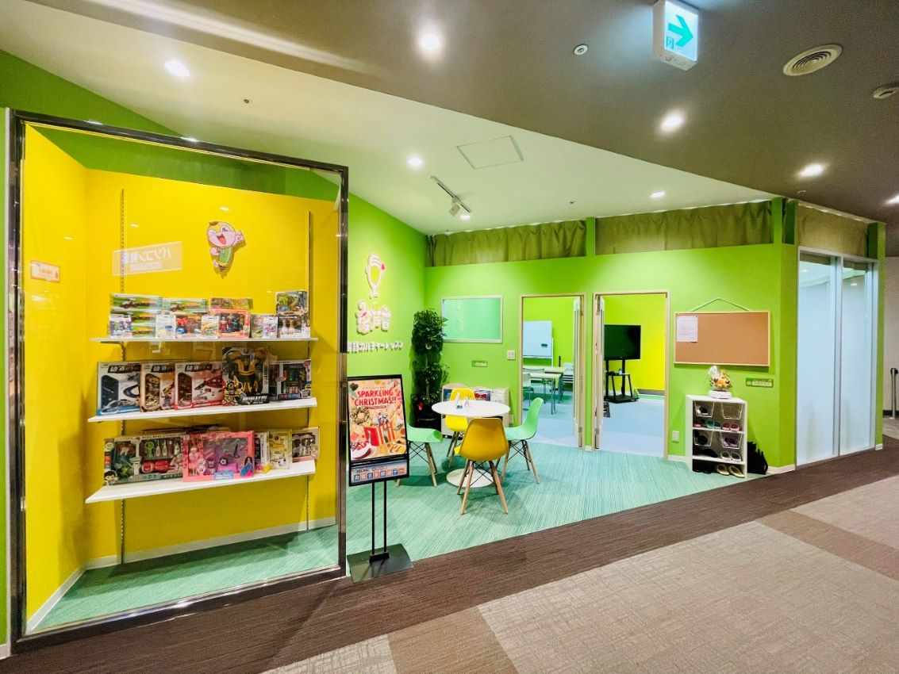
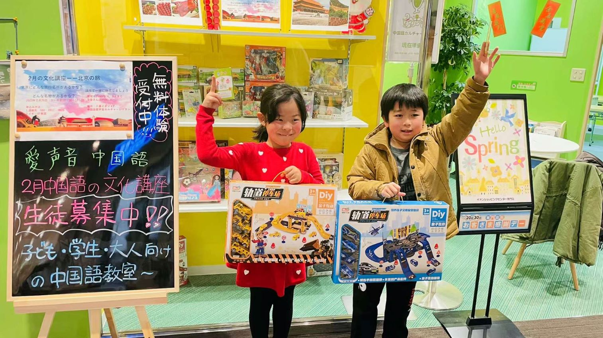
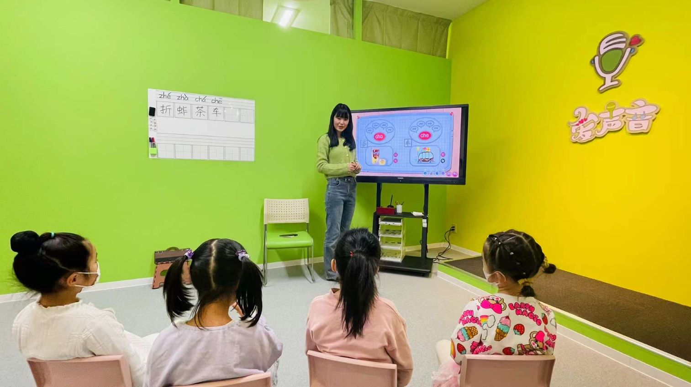

子どもとおとなのための中国語の基礎および司会演技のレッスンを行っています。
「子ども向けの基礎中国語コース」は、世界中で30万人以上の学生がいる「悟空教育」と提携し、複数のカリキュラムを持ち、
さまざまなニーズに応えます。
「子ども向け司会パフォーマンスコース」は、中国国内で既に600以上の学校が導入している「愛声音司会パフォーマンス学院」のカリキュラムです。
※中国の“愛声音司会演技学園”（全国600校以上）をフランチャイズしています。
独自の教材を使用して、中国語ゼロからの基礎教育に力を入れています。
子どもたちが発言力を発揮できるように、集中してレッスンを行っています。
聞く・話す・読む・書く・発表する等の力がつくように、子どもたちの能力を伸ばしていきたいと考えています。
おとな向けのカリキュラムでは、テキストと会話材料を使ってHSKの内容をレッスンを行っています。
このカリキュラムには、中国の伝統文化を学んだり、日常会話で使用する用語の習得したりすることも含まれます。
中国への出張、旅行、さらには中国での赴任や生活の準備・・・など、さまざまな目的に合わせてコースを開設しています。
お気軽にお問い合わせください。